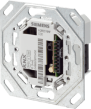
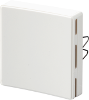
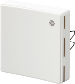

AQR25.. product description
The base modules AQR257.. and the front modules AQR253.. form together room sensors. The room sensors are used in heating, ventilating and air conditioning plants to optimize comfort and energy consumption via demand-controlled ventilation.

Devices featuring CO2 measurement are not suited to safety applications such as gas or smoke alarm.
 | AQR2570Nx, Flush-mount room sensor
Order numbers: Download data sheet: CE1N1411 |
AQR2576Nx, Flush-mount room sensor
Order numbers: Download data sheet: CE1N1411 |
 | AQR2530NNW, Flush-mount room sensor
Order number: S55720-S137 Download data sheet: CE1N1411 |
AQR2532NNW, Flush-mount room sensor
Order number: S55720-S136 Download data sheet: CE1N1411 |
AQR2535NNW, Flush-mount room sensor
Order number: S55720-S141 Download data sheet: CE1N1411 |
 | AQR2535NNWQ, Flush-mount room sensor
Order number: S55720-S219 Download data sheet: CE1N1411 |
The following table shows an overview of the available combinations and their functionality.
Device | Measured variables | |||
|---|---|---|---|---|
| Temperature | Relative humidity | CO2 | Air quality indication |
AQR2570.2530 |
|
|
|
|
AQR2570.2532 | X |
|
|
|
AQR2570.2533 |
| X |
|
|
AQR2570.2535 | X | X |
|
|
AQR2576.2530 |
|
| X |
|
AQR2576.2532 | X |
| X |
|
AQR2576.2533 |
| X | X |
|
AQR2576.2535 | X | X | X |
|
AQR2576.2535Q | X | X | X | X |
Basic documentation |